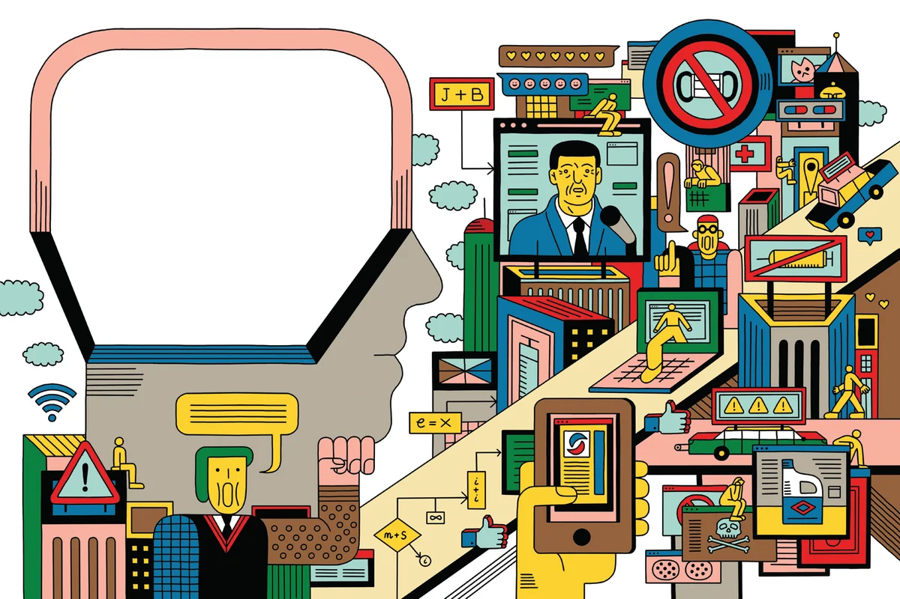

تضليل الرأي العام باستخدام الصور يشكل ظاهرة خطيرة تؤثر على الثقة العامة وتشوه الحقائق والوقائع. يمكن استخدام الصور لتضليل الرأي العام عبر تزييف المعلومات أو تعديل الصور بطرق تغيير المعاني الأصلية، وهذا يؤدي إلى نشر معلومات غير صحيحة أو خاطئة.
عمليات تضليل الرأي العام بواسطة الصور قد تشمل تلاعبًا بالصور لتغيير المشهد الأصلي، أو إضافة عناصر وتعليقات منسوبة بشكل غير صحيح إلى الصور، مما يخلق انطباعات مغلوطة ويوجه الرأي العام نحو اتجاه معين.
هذا النوع من التضليل يمكن أن يستخدم لأغراض سياسية أو تجارية أو حتى شخصية، حيث يهدف إلى تشويه صورة شخص ما أو منظمة أو تشويه الحقائق لصالح أجندة معينة.
التصدي لتضليل الرأي العام بالصور يتطلب التوعية والحذر، حيث يجب على المستهلكين أن يكونوا حذرين ويقوموا بالتحقق من مصداقية المعلومات والصور التي يتم تداولها قبل اعتمادها كمصادر موثوقة.
الحكومات والمنظمات الإعلامية والشركات الاجتماعية يجب أن تعمل على تعزيز الوعي بأهمية التحقق من صحة المعلومات والصور ومحاربة التضليل الإعلامي.
بالإضافة إلى ذلك، يجب تشديد القوانين وتطبيقها بشكل صارم على أولئك الذين يقومون بترويج الأخبار المزيفة أو تعديل الصور بطريقة مغلوطة، لضمان سلامة الرأي العام ونزاهة الإعلام.
في النهاية، فإن التضليل الإعلامي بواسطة الصور يمثل تهديدًا خطيرًا على الديمقراطية والحريات العامة، ويتطلب جهود مشتركة لمكافحته وتقديم الحماية للمجتمع من تأثيره الضار.
